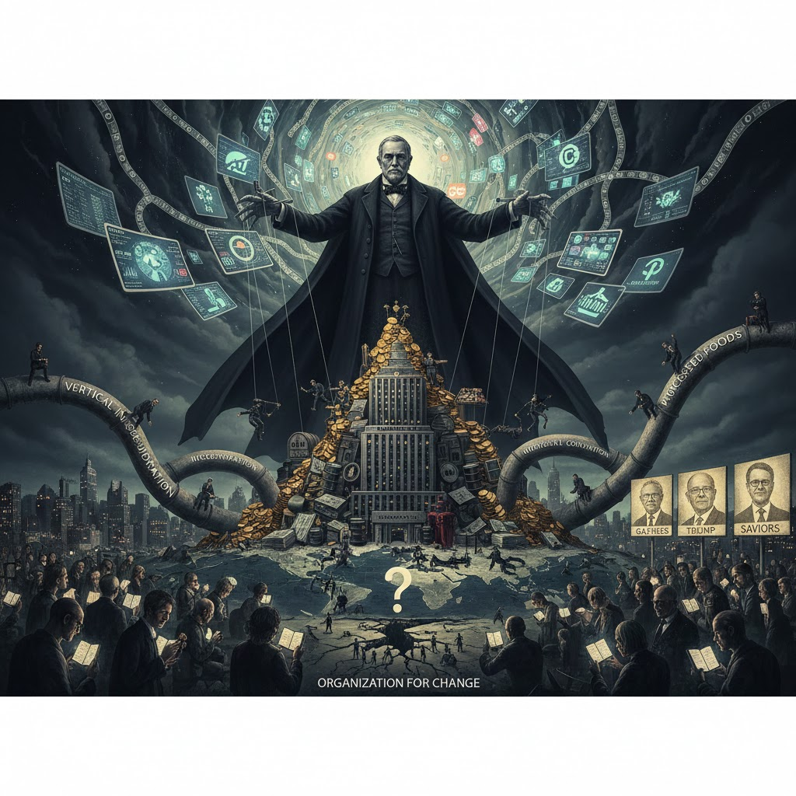

Wealth and Power Concentrate Wealth and Power
This article provides theories and perspectives about wealth and power, which seem to be concentrating and consolidating both extremely and rapidly in most parts of the modern world.
This article was originally published to:
We can see resources, such as land, and gold, as stores of wealth. Wealth and power derive from resources but also maintain power over those same resources, leading to increased concentration. Wealth and power also control labor.
While governments have some influence, my perspective is that there are forces above and outside of government that control very concentrated wealth and hence have power over everything, including governments. We can see this with lobbying and financial contributions to politicians in the United States. The US government, especially its military, often appears to work for corporate and wealthy interests, especially around control over resources such as oil.
John D. Rockefeller Sr. developed corporate capitalist theories and techniques to build Standard Oil. Rockefeller is known for pioneering vertical integration and horizontal consolidation, corporate trusts/holding companies, predatory pricing, secret agreements, low wages, dangerous conditions, union suppression, and manipulative public relations, which is a form of marketing, as well as control over media. In this context, vertical integration refers to controlling every stage of the supply chain to gain massive cost advantages over competitors; horizontal consolidation refers to giving competitors a choice between being bought or ruined.
In the process, Rockefeller reshaped American societal structures and developed a model that continues to centralize control of wealth and power. Many celebrate Rockefeller as a business titan and philanthropist. In truth, he left a dark legacy that works against the majority of the US people and even global populations. Rockefeller even profited immensely when Standard Oil was disbanded as a monopoly, evidencing wealth and power as above government control. His philanthropic efforts can be seen as intended to reduce his own tax burden while negatively influencing societal institutions to his own advantage.
Numerous industries have been influenced by Rockefeller's approach or otherwise suffered from his influence, which is generally not in the best long-term interest of their customers. An emphasis on vocational training and rote memorization in education reduced the focus on critical thinking, making people more mechanistic workers. The priority of pharmaceutical interventions for profit has constricted holistic and natural approaches to healthcare. Rockefeller's practices have evolved to become the basic foundation for every dominant modern corporation. Many of us see Rockefeller's Playbook as a basic core element of the system as we know it, as if no other system could be possible.
In the age of pervasive surveillance data collection, the social media attention economy, and now what we're calling artificial intelligence, there seems to be an escalation in the expansion and application of Rockefeller-esque techniques and therefore their impacts, all of which extract wealth from the relatively poor to concentrate it at the top. Those in control have access to extensive data that they can use to learn from competitors, manipulate markets, and otherwise take advantage of competitors and startups in weaker positions. The behemoths also participate in regulatory capture, where they write the regulatory rules to benefit themselves and disadvantage competition.
We - even the wealthy - have all become slaves to money, to wealth, to greed, to self-enrichment. One theory supported by some evidence suggests that excessive power changes brain structures in a way that resembles brain damage, making people less empathetic and less compassionate, more narcissistic, Machiavellian, psychopathic, and potentially even more sadistic. This is the dark triad or tetrad; people who have these traits naturally are drawn to wealth and power, which exacerbates them. The people who work inside the social media and AI corporations know how these technologies support the system and their negative effects on individuals, but continue to develop and support these antisocial systems, all to achieve greater personal wealth.
The system keeps people distracted, divided, disconnected, disorganized, dysfunctional, disempowered, depressed, diseased, indebted, isolated, indifferent, alienated, angry, and helpless, but entertained, satisfied, and disabled just enough not to reject the system completely and revolt. Our modern social structures are largely a clear evolution of the Roman "bread and circuses", which is a reference to superficial appeasement. Some are misguided enough to actually look up to these wealthy elites, such as Gates, Bezos, Trump, and Musk, as their potential saviors, as if, with enough effort, they can somehow join them. Rather than acting as the fourth branch of government, all corporate media - or, more accurately, propaganda - is simply a facet of this wealth and power control structure, including the celebrity production houses as well as social media and its "influencers".
Today, a small group of people control a vast quantity of the earth's wealth and resources, which basically gives them the ability to buy and sell anything, including labor and even people. In order to meet their basic needs and support their children, the rest of us have no option but to participate in this system of abuse. While the Trump administration continues to organize and consolidate this group into a position of clearly unjustified power, there are also organic forces that perpetuate it, including swarm intelligence and elite interconnections. The elite's common centers of education and goals of power, profit, and control lead to common actions even without their intended coordination, with horrible outcomes such as Epstein's island.
We all seem to know in our guts that something is seriously wrong with the system and the modern world. Just as one example, pharmaceutical companies are making record profits off obesity and diabetes caused by other corporations pushing processed foods at us constantly, as well as from endocrine disruption caused by chemicals in the raw materials for those foods - profits from treating the very diseases that these corporations create. The profiteers thrive on our division. In our greedy, lazy, increasingly narcissistic self-interest, many of us do not make the time and effort to think about these issues and to confront the problems. The constant traumatic experience of cognitive dissonance is the cause of the mental health crisis most significantly appearing in the nations most negatively affected by wealth disparity, destroying our compassion for others in our own species. We've been indoctrinated, gaslit into supporting a system that oppresses us, working against our own shared core values and interests as humans and inhabitants of a shared planet.
Now the primary question is, what are we going to do about it? Everything starts with education and awareness. Then what actions can we take? What actions will you take? It's relatively easy to identify and discuss the problems, but that just perpetuates them. To strategize solutions, determine tactics, and take steps towards change, we need to organize. How do we get there? How do we prevent these forces from achieving greater control over the entire planet and all of its inhabitants? How do we restore human intelligence and get everyone involved in progress for the greater good?
Relevant Resources
I have endless thoughts and resources, but I intentionally kept this article short. I highly recommend going into further detail through the following links and your own independent research.
- YouTube: John D. Rockefeller: The Man Who Created The System You Can Never Escape
- Text: The Dark Truth About John D. Rockefeller
- YouTube: The SWARM Controls You - Until You Awaken
- YouTube: The Rich's Pointless Quest for Immortality - Prof. Jiang Xueqin
- The Atlantic: Power Causes Brain Damage (partially paywalled)
- Text: We were worried about the wrong dystopia
- YouTube: The Terrifying Theory of Stupidity | Dietrich Bonhoeffer’s Warning to Humanity (my summary at https://deliverystack.net/2025/11/14/ignorance-and-stupidity/)
- https://en.wikipedia.org/wiki/Dark_triad
- https://en.wikipedia.org/wiki/Bread_and_circuses
- https://deliverystack.net/2025/11/27/you-are-being-programmed-curate-your-feed-and-control-your-ai-use/
Comments
You can comment here: